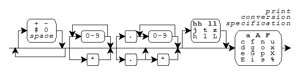

Print Formats · Print Functions · Print Conversion Specifiers
Several library functions help you convert data values from
encoded internal representations to text sequences that are
generally readable by people. You provide a
format string as the value of the
format argument to each of these functions, hence
the term formatted output.
The functions
(declared in
<stdio.h>)
convert internal representations to sequences of type char,
and help you compose such sequences for display:
fprintf,
printf,
sprintf,
vfprintf,
vprintf, and
vsprintf.
For these function, a format string is a
multibyte string
that begins and ends in the
initial shift state.
A format string has the same syntax for both the print functions and the scan functions, as shown in the diagram.
A format string consists of zero or more
conversion specifications
interspersed with literal text and
white space.
White space is a sequence of one or more
characters c for which the call
isspace(c) returns nonzero.
(The characters defined as white space can change when you change the
LC_CTYPE
locale category.)
For the print functions, a conversion specification is one of the
print conversion specifications described below.
A print function scans the format string once from beginning
to end to determine what conversions to perform. Every print
function accepts a
varying number
of arguments, either directly or under control of an argument of type
va_list.
Some print conversion specifications
in the format string use the next argument in the list.
A print function uses each successive argument no more than
once. Trailing arguments can be left unused.
In the description that follows:
d, i, o, u,
x, or Xe, E, f,
g, or GFor the print functions, literal text or white space in a format string generates characters that match the characters in the format string. A print conversion specification typically generates characters by converting the next argument value to a corresponding text sequence. A print conversion specification has the format:

Boldface indicates a feature added with C99.
Following the percent character (%)
in the format string, you can write zero or more
format flags:
-
-- to left-justify a conversion+
-- to generate a plus sign for signed values that
are positivespace
-- to generate a space for signed values
that have neither a plus nor a minus sign#
-- to prefix 0 on an o conversion,
to prefix 0x on an x conversion,
to prefix 0X on an X conversion,
or to generate a decimal point and fraction
digits that are otherwise suppressed on a floating-point conversion0
-- to pad a conversion with leading zeros after
any sign or prefix, in the absence of a minus (-)
format flag or a specified precisionFollowing any format flags, you can write a
field width that
specifies the minimum number of characters to generate for the conversion.
Unless altered by a format flag,
the default behavior is to pad a short conversion
on the left with space characters.
If you write an asterisk (*)
instead of a decimal number for a field width, then a print
function takes the value of the next argument (which must be of type
int) as the field width. If the argument value is negative,
it supplies a - format flag
and its magnitude is the field width.
Following any field width, you can write a dot (.)
followed by a
precision
that specifies one of the following:
the minimum number of digits to generate on an integer conversion;
the number of fraction digits to generate on an e,
E, or f conversion;
the maximum number of significant digits to generate
on a g or G conversion; or the maximum number
of characters to generate from a
C string
on an s conversion.
If you write an * instead of
a decimal number for a precision,
a print function takes the value of the next argument (which must
be of type int) as the precision. If the argument value is
negative, the default precision applies. If you do not write either
an * or a decimal number following the dot, the precision
is zero.
Following any precision, you must write a one-character print conversion specifier, possibly preceded by a one- or two-character qualifier. Each combination determines the type required of the next argument (if any) and how the library functions alter the argument value before converting it to a text sequence. The integer and floating-point conversions also determine what base to use for the text representation. If a conversion specifier requires a precision p and you do not provide one in the format, then the conversion specifier chooses a default value for the precision. The following table lists all defined combinations and their properties.
Conversion Argument Converted Default Pre- Specifier Type Value Base cision %c int x (unsigned char)x %d int x (int)x 10 1 %hd int x (short)x 10 1 %ld long x (long)x 10 1 %e double x (double)x 10 6 %Le long double x (long double)x 10 6 %E double x (double)x 10 6 %LE long double x (long double)x 10 6 %f double x (double)x 10 6 %Lf long double x (long double)x 10 6 %g double x (double)x 10 6 %Lg long double x (long double)x 10 6 %G double x (double)x 10 6 %LG long double x (long double)x 10 6 %i int x (int)x 10 1 %hi int x (short)x 10 1 %li long x (long)x 10 1 %n int *x %hn short *x %ln long *x %o int x (unsigned int)x 8 1 %ho int x (unsigned short)x 8 1 %lo long x (unsigned long)x 8 1 %p void *x (void *)x %s char x[] x[0]... large %u int x (unsigned int)x 10 1 %hu int x (unsigned short)x 10 1 %lu long x (unsigned long)x 10 1 %x int x (unsigned int)x 16 1 %hx int x (unsigned short)x 16 1 %lx long x (unsigned long)x 16 1 %X int x (unsigned int)x 16 1 %hX int x (unsigned short)x 16 1 %lX long x (unsigned long)x 16 1 %% none '%'
The print conversion specifier determines any behavior not summarized in this table. For all floating-point conversions:
inf or INF.-inf or -INF.nan or NAN.The upper-case version prints only for an upper-case conversion specifier,
such as %E but not %Lg.
In the following descriptions, p is the precision. Examples follow each of the print conversion specifiers. A single conversion can generate up to 509 characters.
You write %c
to generate a single character from the converted
value.
printf("%c", 'a') generates a
printf("<%3c|%-3c>", 'a', 'b') generates < a|b >
You write %d,
%i,
%o,
%u,
%x, or
%X to generate
a possibly signed integer representation. %d or %i
specifies signed decimal representation, %o
unsigned octal, %u unsigned decimal,
%x unsigned hexadecimal using the digits 0-9
and a-f, and %X unsigned
hexadecimal using the digits 0-9 and A-F.
The conversion generates at least p digits
to represent the converted value. If p is zero,
a converted value of zero generates no digits.
printf("%d %o %x", 31, 31, 31) generates 31 37 1f
printf("%hu", 0xffff) generates 65535
printf("%#X %+d", 31, 31) generates 0X1F +31
You write %e or
%E to generate
a signed decimal fractional representation with
a decimal power-of-ten exponent. The generated text takes the form
±d.dddE±dd, where ± is either a plus or
minus sign, d is a decimal digit, the decimal point (.)
is the decimal point for the current
locale,
and E is either e (for %e conversion)
or E (for %E conversion).
The generated text has one integer digit,
a decimal point if p is nonzero or if you specify the #
format flag, p fraction digits, and at least two exponent digits.
The result is rounded. The value zero has a zero exponent.
printf("%e", 31.4) generates 3.140000e+01
printf("%.2E", 31.4) generates 3.14E+01
You write %f
to generate a signed decimal fractional representation
with no exponent. The generated text takes the form ±d.ddd,
where ± is either a plus or minus sign,
d is a decimal digit, and the decimal point (.)
is the decimal point for the current
locale.
The generated text has at least one integer digit,
a decimal point if p is nonzero or if you specify
the # format flag, and p fraction digits.
The result is rounded.
printf("%f", 31.4) generates 31.400000
printf("%.0f %#.0f", 31.0, 31.0)generates 31 31.
You write %g or
%G to generate
a signed decimal fractional
representation with or without a decimal power-of-ten exponent, as appropriate.
For %g conversion, the generated text
takes the same form as either %e
or %f conversion. For %G conversion,
it takes the same form as either
%E or
%f
conversion.
The precision p specifies the number
of significant digits generated. (If p is zero, it is changed
to 1.) If %e conversion would yield an exponent in the range
[-4, p), then %f conversion occurs instead.
The generated text has no trailing zeros
in any fraction and has a decimal point
only if there are nonzero fraction digits, unless you specify the
# format flag.
printf("%.6g", 31.4) generates 31.4
printf("%.1g", 31.4) generates 3.14e+01
You write %n
to store the number of characters generated
(up to this point in the format) in an integer object
whose address is the value of the next successive argument.
printf("abc%n", &x) stores 3
You write %p
to generate an external representation of a pointer to void.
The conversion is implementation defined.
printf("%p", (void *)&x) generates, e.g. F4C0
You write %s
to generate a sequence of characters from
the values stored in the argument
C string.
printf("%s", "hello") generates hello
printf("%.2s", "hello") generates he
You write %% to generate
the percent character (%).
printf("%%") generates %
See also the Table of Contents and the Index.
Copyright © 1989-2002 by P.J. Plauger and Jim Brodie. All rights reserved.